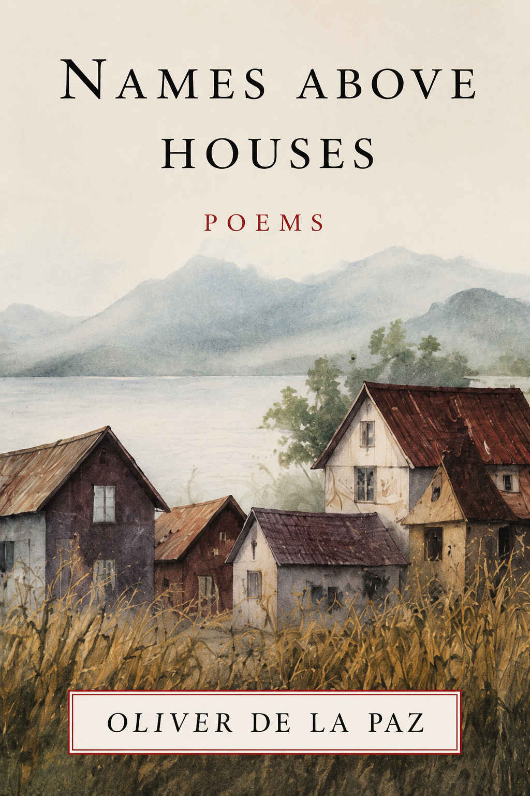
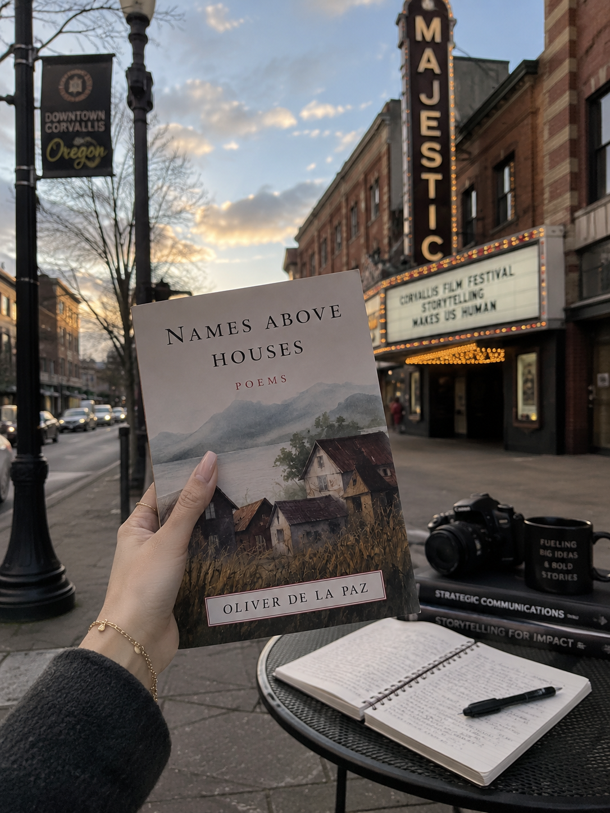

Oliver de la Paz, Names Above Houses (2001)
Content warning:
Discrimination and bigotry, mental illness, violence
Synopsis
In Names Above Houses, Oliver de la Paz constructs a realm for the Recto family, Filipino immigrants who move from an archipelago to San Francisco. The narrative centers on Fidelito Recto, a boy born with a nimbus and wing nubs who seeks to take flight. His mother, Maria Elena, attempts to keep her son grounded while she struggles with her own moorings in a new land. His father, Domingo, is a fisherman who remains at sea even when he is physically present with his family. De la Paz uses prose and verse to map the horizontal and vertical movements of displacement. The work functions as a lyrical meditation on how names, family stories, and inherited silences shape a life lived between cultures. Identity appears as a structure built from fragments, haunted by histories that travel across oceans.
Essay
Far out at sea, the long boat of Fidelito’s father sighs, a blue flame on the horizon. In his yellow slicker, Domingo tugs at his net and pulls up more stars. They give themselves from the ocean. (de la Paz 31)
The opening movement of Names Above Houses establishes a world where labor and the celestial are linked. For the Recto family, migration is not a simple crossing of borders. It is a descent into a secret language of survival. This work changes the map of Oregon literature. De la Paz focuses on diaspora and inheritance in the Pacific Northwest. He argues that the immigrant experience is central to the identity of the region. Oregon has a history of exclusion and whiteness. This collection insists that Asian American experiences belong at the center of the narrative. Identity here is not a house one inherits. It is a structure where people rebuild from fragments.
The head arched back so far the ground disappears and the name, in meditation, opens in cold air like a parachute. (de la Paz 12)
The title indicates that identity hovers above the structures of a home. A house suggests stability, but here the names are placed above the houses. Homes are temporary or remembered. The mother tries to ground her son while she is adrift. The father is a fisherman who pulls stars from the water. This secret language is understood by people from marginalized cultures. The collection follows a chronology from the Year of the Rat to the death of the father. The poems describe the work of translation. This is not just about words. It is about cultural and emotional translation. The family keeps secrets. These are silences that the family cannot tell the boy. Fidelito haunts airports and moves on downward escalators. He prays to the wind for advice. He hangs from branches and then lets go. Eventually he practices flying in his sleep. His growth is tied to his name. He speaks of the turn of a century. He contemplates his power to alter weather patterns. The work functions as a novella in verse. It threads the fantastic into imagery. It rejects the demand for purity. Instead, it shows how familial and poetic identities overlap.
The boy represents the immigrant whose suppressed dreams come to life. Flight is the method of leaving the ground when the ground disappears. The domestic space becomes a place of both trauma and wonder. De la Paz describes the beautiful mole in the armpit of the mother. He writes of a cupboard full of halos. These details ground the mystical elements in the reality of the household. The kitchen contains insects and floods of ants. Maria Elena calls the name of the boy many times in a day. These repetitions are moorings in a world of displacement. The ocean remains a constant force for Domingo. He learns to steady his hand at sea. Even when he is old and can no longer fish, the romance of the sea persists. His death marks a shift in the family architecture. Maria Elena puts his good shoes away. Fidelito reflects on what he knows of his father. The mourning process is described through the kitchen and the way the blessed mourn. De la Paz resists a narrative of simple assimilation. The poems linger in the in-between spaces of mispronounced names and fragmented stories. The movement is both horizontal and vertical. Horizontal movement tracks the journey from the Philippines to San Francisco. Vertical movement tracks the flight of Fidelito. Both movements define the psychogeography of the Recto family. The presence of the nimbus suggests an angelic quality. Some critics compare Fidelito to the fallen angel in the work of Gabriel García Márquez. Both characters are noticed by a select few to be of extraordinary quality. Both characters eventually take flight to escape the mundane.
For Fidelito, flight is the ultimate expression of his name. In the context of the Pacific Northwest, this collection expands the definition of belonging. Belonging is not guaranteed by geography. It is negotiated through memory and language. De la Paz creates a map that includes the archipelago and the suburb. He shows that the history of the region is built from the fragments of immigrant lives. The architecture of the self is never finished. It is a structure people keep rebuilding. Ultimately, Names Above Houses is a meditation on the fragile nature of identity. It uses lyrical language to witness the realities of the diaspora. It insists that the stories of the marginalized are central to the literary identity of the region. The flight of the boy is a symbol of the dreams that survive migration, the name that opens like a parachute is the only structure that can hold the weight of the past.
Author Bio
Oliver de la Paz is a Filipino American poet, editor, and educator whose work explores migration, memory, family history, and the complexities of diasporic identity. Born in Manila, Philippines, and raised in Ontario, Oregon, de la Paz often draws upon his experiences navigating multiple cultural worlds, examining how place, language, and inheritance shape one's sense of self. He earned an MFA in Creative Writing from Arizona State University and is the author of several acclaimed poetry collections, including Names Above Houses (2001), Requiem for the Orchard (2010), and Post Subject: A Fable (2014). His work has received support from organizations such as the New York Foundation for the Arts and Artists Trust.
Further Reading
Oliver de la Paz, Requiem for the Orchard (2010)
- Poems on labor and Filipino American identity.
Oliver de la Paz, Post Subject: A Fable (2014)
- An exploration of violence and media.

